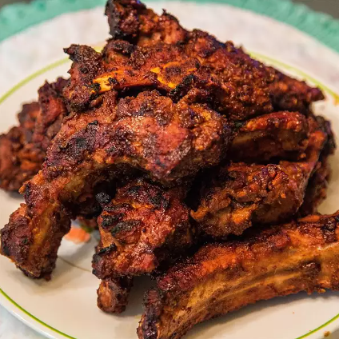

Spicy Korean Ribbs

Description
Found this Spicy Korean ribbs on AllRecipes while making recipes section of Odin Project, it seems to have strong flavors and to be really tasty!
Ingredients
- 4 racks baby back pork ribs
- salt and ground black pepper to taste
- 1 small onion, sliced
- 1 cup kochujang (Korean hot sauce)
- ¼ cup white vinegar
- ¼ cup minced garlic
- 3 tablespoons sesame oil
- 2 tablespoons soy sauce
- 1 (1 1/2 inch) piece fresh ginger root, minced, or to taste
- 1 (1 1/2 inch) piece fresh ginger root, sliced, or to taste
- 1 (12 fluid ounce) bottle pilsner-style lager
- 1 ½ teaspoons toasted white sesame seeds
- 1 ½ teaspoons toasted black sesame seeds
Directions
- Step 1: Remove membrane from back of ribs or score with a sharp knife. Place ribs in a shallow dish and season with salt and pepper.
- Step 2: Puree onion in a blender or food processor. Add kochujang, vinegar, garlic, sesame oil, soy sauce, and minced ginger; puree into a sauce. Rub 1/3 generously over ribs, reserving the rest of the sauce. Cover ribs with plastic wrap and refrigerate 5 hours to overnight.
- Step 3: Preheat the oven to 325 degrees F (165 degrees C).
- Step 4: Scatter sliced ginger root over the bottom of a roasting pan. Place ribs meat-side down on top of ginger slices and pour lager over ribs. Cover with a lid or aluminum foil.
- Step 5: Bake in the preheated oven until meat is loosened from the ribs but not yet falling off the bone, 2 to 2 1/2 hours. Let cool, 5 to 10 minutes.
- Step 6: Preheat an outdoor grill to 400 degrees F (200 degrees C) and lightly oil the grate. Place ribs on the grill and cook until browned, about 6 minutes per side. Coat with 1/2 the reserved sauce during the last 2 minutes of cooking each side. Garnish with white and black sesame seeds.